Loét Dạ Dày – Tá Tràng
I. Đại cương
– Loét dạ dày – tá tràng (Peptic Ulcer Disease) là tình trạng tổn thương khuyết niêm mạc đường tiêu hóa trên (thường gặp nhất ở dạ dày và hành tá tràng) ăn sâu vượt qua lớp cơ niêm tới lớp dưới niêm mạc hoặc sâu hơn, phân biệt với trợt niêm mạc chỉ khu trú nông ở lớp biểu mô.
– Dịch tễ: Bệnh phổ biến toàn cầu nhưng dịch tễ có sự chuyển dịch rõ rệt theo điều kiện kinh tế – xã hội và việc tiệt trừ *Helicobacter pylori*:
+ Tỷ lệ mắc bệnh trọn đời trong dân số chung ước tính khoảng 5–10% và tỷ lệ mắc mới hàng năm khoảng 0,1–0,3%; tại Việt Nam, tỷ lệ hiện mắc ghi nhận trong khoảng 7–10% dân số tùy theo nghiên cứu dịch tễ và nhóm tuổi khảo sát.
+ Bệnh gặp ở mọi lứa tuổi nhưng tỷ lệ nhập viện và biến chứng tăng cao ở người cao tuổi do gia tăng sử dụng thuốc kháng viêm không steroid (NSAIDs) và thuốc chống kết tập tiểu cầu.
+ Lối sống hiện đại, căng thẳng thần kinh kéo dài và thói quen sinh hoạt thất thường làm tăng nguy cơ khởi phát triệu chứng và tái phát ổ loét.
– Cơ chế bệnh sinh: Tổn thương hình thành do sự mất cân bằng giữa nhóm yếu tố tấn công (axit clohydric, pepsin, dịch mật trào ngược, độc tố vi khuẩn, thuốc) và nhóm yếu tố bảo vệ hàng rào niêm mạc (lớp chất nhầy – bicarbonat, lưu lượng máu dưới niêm mạc, prostaglandin nội sinh và khả năng tái tạo biểu mô):
+ Khi hàng rào niêm mạc suy yếu hoặc tiết axit quá mức, ion H+ và pepsin khuếch tán ngược gây hoại tử tế bào biểu mô, phản ứng viêm cấp hoặc mạn tính tại lớp dưới niêm mạc và tạo khuyết tổ chức.
+ Quá trình xơ hóa kéo dài trong loét mạn tính dẫn đến co kéo, biến dạng giải phẫu thành ống tiêu hóa (như co rút bờ cong nhỏ, hẹp môn vị hoặc biến dạng hành tá tràng).
– Biểu hiện lâm sàng: Triệu chứng lâm sàng thường không đặc hiệu và không tương xứng với kích thước hay nguy cơ biến chứng của ổ loét:
+ Đau vùng thượng vị là triệu chứng phổ biến nhất, thường liên quan đến bữa ăn (đau tăng sau ăn trong loét dạ dày hoặc đau khi đói, giảm sau ăn trong loét tá tràng), kèm ợ hơi, ợ chua, buồn nôn.
+ Khoảng 20–30% trường hợp (đặc biệt ở người cao tuổi dùng NSAIDs) diễn biến âm thầm và chỉ phát hiện khi đã xuất hiện biến chứng cấp cứu như xuất huyết tiêu hóa, thủng tạng rỗng, loét xuyên thấu hoặc hẹp môn vị.
– Phân bố: Vị trí tổn thương liên quan chặt chẽ với căn nguyên và định hướng chẩn đoán phân biệt lành – ác tính trên hình ảnh:
+ Loét tá tràng chiếm tỷ lệ cao hơn loét dạ dày, tập trung chủ yếu ở hành tá tràng (phần D1, đặc biệt mặt trước và mặt sau); ổ loét nằm sau hành tá tràng (D2, D3) gợi ý bệnh lý tăng tiết axit như hội chứng Zollinger – Ellison.
+ Loét dạ dày thường gặp nhất ở vùng hang vị và dọc bờ cong nhỏ (đặc biệt vùng góc bờ cong nhỏ – nơi chuyển tiếp niêm mạc thân vị và hang vị); ổ loét ở thân vị, đáy vị hoặc bờ cong lớn đòi hỏi cảnh giác cao để loại trừ ung thư dạ dày thể loét.
– Vai trò CĐHA: Nội soi tiêu hóa trên kèm sinh thiết là tiêu chuẩn vàng để chẩn đoán xác định và loại trừ ác tính, trong khi chẩn đoán hình ảnh giữ vai trò thiết yếu trong đánh giá biến chứng và các trường hợp chống chỉ định nội soi:
+ Chụp X-quang lưu thông thực quản – dạ dày – tá tràng đối quang kép giúp phát hiện ổ loét, đánh giá biến dạng giải phẫu mạn tính (hẹp môn vị, biến dạng hành tá tràng) và phân biệt sơ bộ hình thái lành – ác tính khi bệnh nhân không thể nội soi.
+ Cắt lớp vi tính (đặc biệt cắt lớp vi tính đa dãy có tiêm thuốc cản quang tĩnh mạch và uống nước làm căng lòng) là phương tiện hàng đầu trong cấp cứu để chẩn đoán loét thủng, ổ loét xuyên thấu, phát hiện điểm chảy máu hoạt động và phân biệt loét lành tính với ung thư dạ dày xâm lấn.
+ Siêu âm bụng có giá trị sàng lọc nhanh tại giường ở bệnh nhân đau thượng vị cấp, giúp phát hiện dấu hiệu dày thành dạ dày – tá tràng khu trú, dịch tự do hoặc khí tự do dưới vòm hoành gợi ý thủng ổ loét.
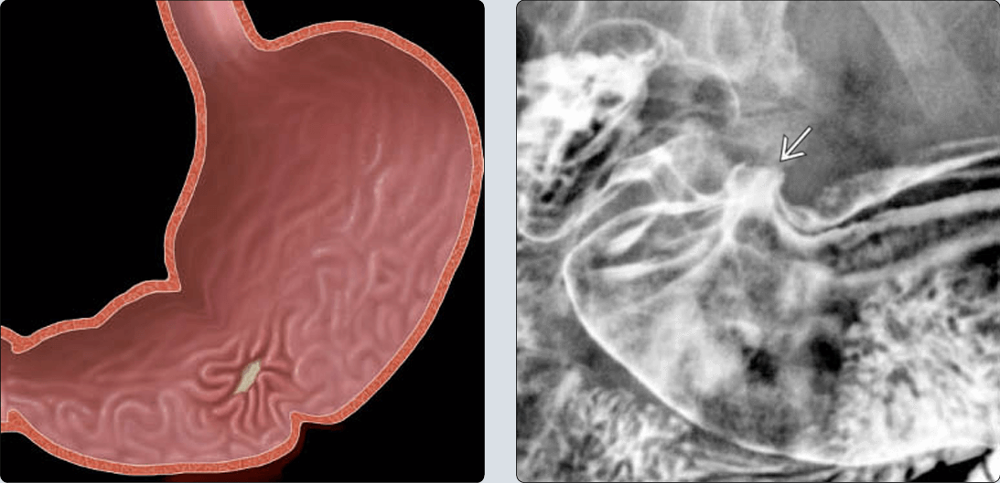
© Chẩn Đoán Hình Ảnh Xray.vn
II. Nguyên nhân
– Vi khuẩn Helicobacter pylori: Là căn nguyên hàng đầu gây viêm dạ dày mạn tính vùng hang vị (viêm dạ dày týp B) và viêm tá tràng trên nền dị sản niêm mạc dạ dày ở hành tá tràng:
+ Men urease thủy phân urê tạo amoniac giúp vi khuẩn tồn tại trong môi trường axit nhưng trực tiếp gây độc tế bào biểu mô, đồng thời kích thích tăng tiết gastrin và axit clohydric.
+ Các men protease, phospholipase và độc tố (CagA, VacA) phá hủy lớp chất nhầy bảo vệ; protein bề mặt gây hóa ứng động bạch cầu đa nhân trung tính và đại thực bào, giải phóng yếu tố hoạt hóa tiểu cầu, gốc tự do superoxide, interleukin-1 và TNF gây viêm hoại tử niêm mạc.
+ Tỷ lệ nhiễm *Helicobacter pylori* trong loét dạ dày – tá tràng trước đây ghi nhận tới 90–95% (đặc biệt ở loét tá tràng), nhưng hiện nay tỷ lệ này có xu hướng giảm dần ở nhiều quần thể do điều trị tiệt trừ rộng rãi và gia tăng tỷ lệ loét liên quan đến thuốc.
– Thuốc: Là nguyên nhân phổ biến thứ hai gây loét dạ dày – tá tràng và là nguyên nhân hàng đầu gây loét không do *Helicobacter pylori*, thường gặp ở dạ dày hơn tá tràng và dễ gây biến chứng xuất huyết hoặc thủng âm thầm:
+ Aspirin gây tổn thương phối hợp qua cơ chế tại chỗ (không phân ly trong môi trường pH axit, tan trong lipid xuyên màng gây độc trực tiếp tế bào biểu mô) và cơ chế toàn thân (ức chế men COX làm giảm tổng hợp prostaglandin nội sinh, giảm tiết chất nhầy – bicarbonat và giảm tưới máu niêm mạc).
+ Thuốc kháng viêm không steroid (NSAIDs) gây loét và xuất huyết chủ yếu qua cơ chế ức chế tổng hợp prostaglandin toàn thân tương tự aspirin, nhưng mức độ ăn mòn trực tiếp tại chỗ thấp hơn.
+ Corticosteroid đơn độc ít có khả năng tự khởi phát ổ loét nguyên phát ở niêm mạc lành, nhưng làm chậm lành sẹo, kích hoạt ổ loét cũ và làm tăng mạnh nguy cơ loét – xuất huyết tiêu hóa khi phối hợp với NSAIDs hoặc aspirin.
– Thuốc lá: Hút thuốc lá làm tăng nguy cơ hình thành ổ loét mới, làm chậm liền sẹo và tăng tỷ lệ tái phát hoặc kháng trị thông qua kích thích dây thần kinh X tăng tiết axit, giảm tiết bicarbonat của tụy – tá tràng, giảm lưu lượng máu niêm mạc và tăng trào ngược dịch mật tá tràng – dạ dày.
– Rối loạn vận động dạ dày – tá tràng: Rối loạn làm vơi dạ dày và trào ngược dịch tá tràng – dạ dày góp phần duy trì tổn thương niêm mạc:
+ Làm vơi dạ dày quá nhanh đưa lượng lớn dịch vị axit xuống hành tá tràng vượt quá khả năng trung hòa của bicarbonat, thúc đẩy loét tá tràng.
+ Làm vơi dạ dày chậm gây ứ trệ thức ăn và axit kéo dài ở hang vị, kích thích tiết gastrin và gây loét dạ dày; đồng thời trào ngược dịch mật và men tụy từ tá tràng phá hủy hàng rào chất nhầy dạ dày.
– Yếu tố di truyền và tâm lý: Đóng vai trò nền tảng thuận lợi và thúc đẩy tái phát hơn là nguyên nhân đơn độc:
+ Yếu tố gia đình và tỷ lệ đồng mắc cao hơn ở cặp sinh đôi đồng hợp tử so với dị hợp tử gợi ý tính nhạy cảm di truyền (như tăng khối lượng tế bào thành hoặc nhóm máu O).
+ Sang chấn tâm lý và căng thẳng thần kinh kéo dài làm tăng trương lực thần kinh phế vị, tăng tiết axit và ảnh hưởng bất lợi đến đáp ứng điều trị, cần phân biệt với loét do stress cấp tính (loét Curling, loét Cushing) ở bệnh nhân hồi sức tích cực.
– Các nguyên nhân ít gặp khác: Cần nghĩ đến khi ổ loét âm tính với *Helicobacter pylori*, không dùng NSAIDs, đa ổ, vị trí bất thường (sau hành tá tràng D2–D3) hoặc kháng trị:
+ Tình trạng tăng tiết axit nguyên phát như hội chứng Zollinger – Ellison (u tiết gastrin – gastrinoma) hoặc tăng sản tế bào G vùng hang vị.
+ Bệnh lý viêm mạn tính, nhiễm trùng cơ hội hoặc tổn thương mạch máu – hóa chất như bệnh Crohn đường tiêu hóa trên, nhiễm Cytomegalovirus (CMV) hoặc Herpes simplex ở người suy giảm miễn dịch, thiếu máu cục bộ, xạ trị và biến chứng sau phẫu thuật nối vị – tràng.
III. Chẩn đoán x-quang
1. Viêm loét dạ dày
* Hình ảnh ổ loét
– Ổ loét nông: Tổn thương mới ăn sâu qua lớp niêm mạc vào phần nông lớp dưới niêm mạc, chiều sâu thường < 2–3 mm nên khó giữ thuốc cản quang khi thay đổi tư thế:
+ Trên bình diện tiếp tuyến (nhìn nghiêng), ổ loét tạo hình lồi nhỏ vượt ra ngoài đường bờ giải phẫu của thành dạ dày, điển hình dạng hình gai hồng hoặc nửa hạt đỗ với đáy nhẵn, ranh giới rõ.
+ Trên bình diện thẳng mặt (nhìn trực diện), ổ loét hiện hình là một chấm hoặc đốm đọng thuốc cản quang nhỏ có bờ đều, bao quanh bởi quầng sáng phù nề niêm mạc và các nếp niêm mạc hội tụ hướng thẳng vào bờ ổ loét.
+ Cạm bẫy: Thuốc cản quang dễ trôi khỏi hốc loét nông khi xoay trở tư thế hoặc chưa phủ đều niêm mạc, dễ bỏ sót nếu không chụp đối quang kép đủ thì căng hơi và ép nhẹ có kiểm soát; ổ loét nông ở mặt sau thường phát hiện tốt nhất trên tư thế nằm ngửa nhờ lớp thuốc baryte đọng lại tự nhiên.
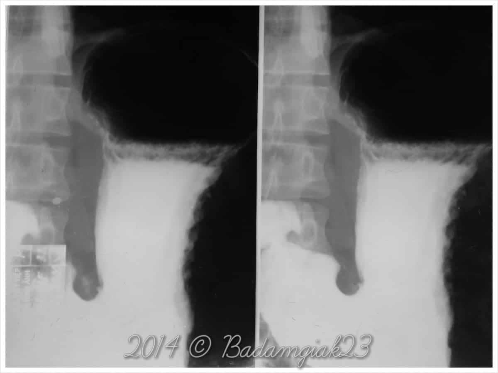
– Loét trong thành: Tổn thương ăn sâu vào lớp dưới niêm mạc và có thể chạm tới lớp cơ nhưng chưa vượt qua lớp thanh mạc, giữ hình thái ổn định hơn qua các lần xoay trở tư thế so với ổ loét nông:
+ Trên bình diện tiếp tuyến (nhìn nghiêng), ổ loét hiện hình là hốc lồi nhô ra ngoài đường bờ bình thường của thành dạ dày với dạng hình nón, chỏm cầu hoặc vuông, bờ đều và đáy nhẵn.
+ Trên bình diện thẳng mặt (nhìn trực diện), ổ loét tạo ổ đọng thuốc cản quang tròn hoặc bầu dục ranh giới rõ, bao quanh bởi quầng sáng phù nề niêm mạc đối xứng (đường Hampton hoặc gò loét lành tính) cùng các nếp niêm mạc mảnh hội tụ đều đặn tới tận bờ ổ loét.
+ Cạm bẫy: Thuốc baryte có thể lấp đầy hốc loét rồi thoát ra một phần khi thay đổi tư thế hoặc do nhu động co bóp, chỉ để lại lớp tráng thuốc mỏng không đều quanh bờ (dấu hiệu vòng nhẫn) dễ bị nhận nhầm là một nếp niêm mạc dày hoặc ổ loét đã thu nhỏ.
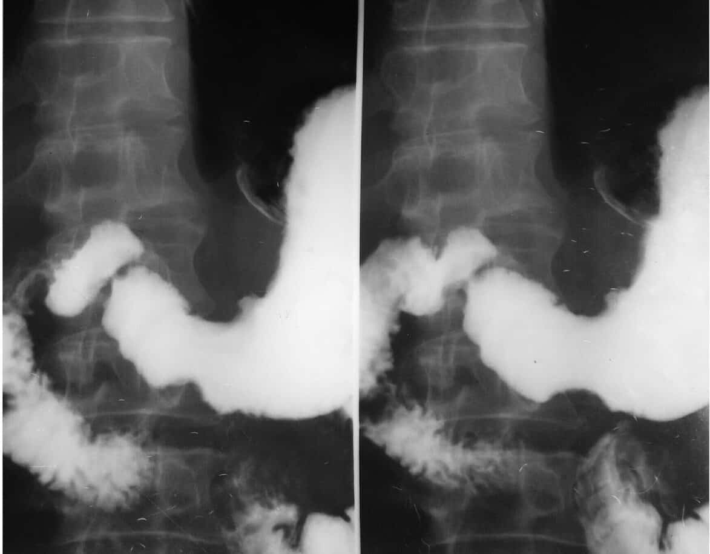
– Loét sắp thủng: Tổn thương ăn sâu xuyên qua lớp cơ tới sát lớp thanh mạc kèm phản ứng phù nề và xơ hóa dày lên của thanh mạc tại đáy ổ loét giúp ngăn thủng tự do vào ổ phúc mạc:
+ Trên bình diện tiếp tuyến, ổ loét nhô sâu vượt ra ngoài đường bờ thành dạ dày với đáy phình rộng trong khi cổ ổ loét thắt hẹp do phù nề niêm mạc xung quanh, tạo hình ổ loét có cuống, hình nấm hoặc hình dùi chiêng (đầu to – cuống nhỏ).
+ Đường sáng Hampton vẫn có thể quan sát thấy ở vùng cổ ổ loét lành tính, giúp phân biệt với khối u hoại tử trung tâm dạng miệng núi lửa nằm chìm bên trong đường bờ thành dạ dày.
+ Cạm bẫy: Cổ ổ loét phù nề hẹp có thể ngăn thuốc baryte lấp đầy toàn bộ hốc loét hoặc khiến hốc loét trông nhỏ hơn kích thước giải phẫu thực tế; đồng thời đây là tổn thương có nguy cơ thủng cấp tính cao khi bơm căng hơi quá mức hoặc ép mạnh vùng thượng vị.
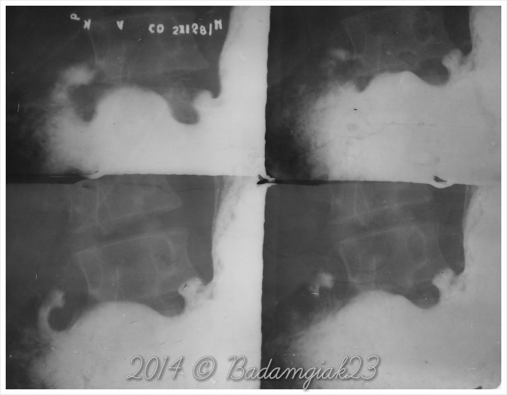
– Loét thủng bít: Tổn thương loét xuyên thủng toàn bộ các lớp của thành dạ dày (kể cả thanh mạc) nhưng được khu trú lại nhờ phản ứng dính và bao bọc của tạng lân cận như tụy, gan, mạc nối nhỏ hoặc dây chằng gan – tá tràng mà không gây tràn khí tự do vào ổ phúc mạc:
+ Trên bình diện tiếp tuyến (tư thế đứng), ổ loét tạo thành hốc lớn và sâu nhô hẳn ra ngoài đường bờ giải phẫu dạ dày dạng hình ngón tay đeo găng hoặc hình túi thừa (hốc loét Haudeck).
+ Bên trong hốc loét kinh điển phân thành ba lớp tỷ trọng xếp chồng từ trên xuống dưới gồm lớp hơi ở đỉnh, lớp dịch vị đọng ở giữa và lớp thuốc cản quang baryte lắng ở đáy.
+ Cạm bẫy: Hốc loét thủng bít có thể giống túi thừa dạ dày thật nhưng phân biệt nhờ cổ hốc loét cứng, không thay đổi hình dạng theo nhu động và kèm phù nề niêm mạc xung quanh; chống chỉ định dùng baryte khi nghi ngờ thủng tự do và chỉ khảo sát bằng thuốc cản quang tan trong nước khi cần thiết.
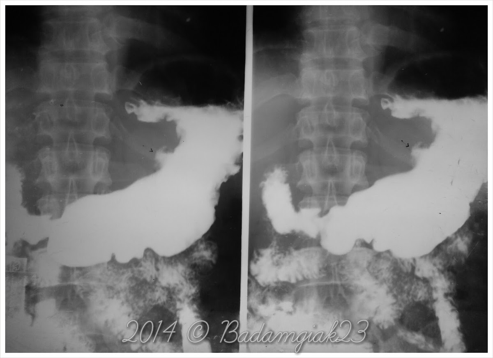
* Phân biệt ổ loét
– Góc tá – hỗng tràng (góc Treitz): Quai ruột vùng góc Treitz đọng thuốc cản quang có thể chồng hình lên bờ cong nhỏ dạ dày trên phim thẳng, vừa tạo hình giả ổ loét vừa che lấp ổ loét thật tại vị trí này:
+ Phân biệt bằng cách xoay bệnh nhân dưới màn tăng sáng (tư thế chếch trước phải hoặc chếch sau trái) và chụp các thì muộn hơn để tách biệt quai hỗng tràng ra khỏi đường bờ dạ dày, đồng thời quan sát nhu động và nếp niêm mạc ruột non chạy liên tục bên trong.
– Túi thừa dạ dày: Thường khu trú ở vùng tâm vị – đáy vị (đặc biệt mặt sau dưới tâm vị) và có hình túi lồi cổ hẹp nối thông với lòng dạ dày:
+ Phân biệt với ổ loét nhờ cổ túi thừa mềm mại thay đổi kích thước theo nhu động, các nếp niêm mạc dạ dày bình thường chạy liên tục vào tận cổ túi thừa và không có quầng sáng phù nề hay gò niêm mạc xung quanh.
– Túi thừa tá tràng: Túi thừa ở đoạn D2 hoặc D3 tá tràng khi chứa thuốc baryte và chồng hình lên vùng góc bờ cong nhỏ dạ dày tạo khối cản quang tròn, bờ rõ dễ nhầm với ổ loét khổng lồ:
+ Phân biệt nhờ vị trí giải phẫu nằm ngoài thành dạ dày khi xoay tư thế nghiêng hoặc chếch, thay đổi hình dạng theo nhu động, chứa mức khí – dịch và không gây co kéo hay hội tụ nếp niêm mạc dạ dày.
– Hạch mạc treo hoặc tụy vôi hóa: Các nốt vôi hóa ở vùng thượng vị hoặc quanh tụy chồng hình lên dạ dày trên phim cản quang có thể bị nhận nhầm là ổ đọng thuốc baryte:
+ Phân biệt bằng phim chụp bụng không chuẩn bị trước khi uống thuốc cản quang để xác nhận hình cản quang đã tồn tại sẵn, kết hợp xoay tư thế thấy khối vôi hóa di lệch tách khỏi thành dạ dày.
– Phân biệt ổ loét dạ dày lành tính và ác tính: Là trọng tâm thực hành bắt buộc trên X-quang đối quang kép để chỉ định nội soi sinh thiết kịp thời:
+ Về vị trí tương quan đường bờ trên bình diện tiếp tuyến, ổ loét lành tính nhô hẳn ra ngoài đường bờ giải phẫu của thành dạ dày (dấu hiệu đường Hampton là đường sáng mảnh ≤ 1–2 mm chạy ngang cổ ổ loét), trong khi ổ loét ác tính (ung thư dạ dày thể loét) nằm chìm bên trong lòng dạ dày trên nền khối u lồi vào lòng tạo hình thấu kính Carman (Carman meniscus sign).
+ Về hình thái hốc loét và bờ ổ loét, ổ loét lành tính thường tròn hoặc bầu dục, bờ đều, đáy nhẵn; ổ loét ác tính có hình dạng bất thường, bờ nham nhở, gồ ghề và gờ u xung quanh dày không đối xứng.
+ Về nếp niêm mạc xung quanh trên bình diện thẳng mặt, trong loét lành tính các nếp niêm mạc mảnh, mềm mại, hội tụ đều đặn tới tận mép ổ loét; trong loét ác tính các nếp niêm mạc dày cứng, phình to dạng dùi trống, cắt cụt đột ngột hoặc dính hợp nhất trước khi tới bờ ổ loét.
+ Cạm bẫy: Một số ổ loét ác tính nông có thể tạm thời thu nhỏ hoặc biểu mô hóa bề mặt dưới tác dụng của thuốc ức chế tiết axit, nên mọi ổ loét dạ dày phát hiện trên X-quang đều bắt buộc phải nội soi tiêu hóa trên kèm sinh thiết nhiều mảnh ở bờ và đáy ổ loét để loại trừ ung thư, kể cả khi hình ảnh X-quang gợi ý lành tính.
* Thay đổi bờ cong nhỏ
– Cứng đoạn bờ cong nhỏ: Đoạn bờ cong nhỏ dài khoảng 1–2 cm mất độ mềm mại và không thay đổi hình dạng theo sóng nhu động do phản ứng phù nề viêm cấp tính hoặc thâm nhiễm xơ hóa quanh ổ loét.
– Co rút bờ cong nhỏ: Quá trình viêm xơ hóa mạn tính làm ngắn dần chiều dài bờ cong nhỏ và kéo lệch trục giải phẫu của dạ dày:
+ Môn vị bị kéo lệch lên cao về phía góc bờ cong nhỏ (thậm chí sát vùng tâm vị), làm bờ cong nhỏ cuộn ngắn lại trong khi vùng hang vị giãn rộng bù trừ, tạo hình dạ dày dạng con sên hoặc hình ấm chè.
+ Dấu hiệu này là bằng chứng gián tiếp giá trị cao gợi ý tiền sử loét mạn tính khi không còn quan sát thấy hốc loét trực tiếp, đồng thời tồn tại vĩnh viễn ngay cả khi ổ loét đã liền sẹo hoàn toàn và là yếu tố cơ học quan trọng dẫn đến hẹp môn vị.
+ Cạm bẫy: Đoạn bờ cong nhỏ cứng hoặc co rút biến dạng cần phân biệt với ung thư dạ dày thể thâm nhiễm cứng (linitis plastica) vốn gây mất nhu động lan tỏa, lòng dạ dày thu hẹp đồng tâm không giãn bù trừ vùng hang vị và thường kèm phá hủy cấu trúc nếp niêm mạc; nội soi sinh thiết vẫn bắt buộc khi thấy đoạn cứng khu trú.
* Thay đổi hang môn vị
– Kéo lệch trục môn vị: Xơ hóa co rút dọc bờ cong nhỏ kéo ống môn vị lệch lên trên và vào trong, làm mất vị trí giải phẫu thẳng hàng giữa hang vị và hành tá tràng.
– Hẹp môn vị do viêm hoặc xơ hóa: Ổ loét vùng tiền môn vị hoặc ống môn vị gây phù nề niêm mạc cấp tính hoặc sẹo xơ co kéo mạn tính làm thu hẹp khẩu kính ống môn vị:
+ Trên X-quang, ống môn vị thu hẹp lệch tâm hoặc kéo dài, kèm giãn ứ đọng dịch và thức ăn ở thân – hang vị (hình ảnh tuyết rơi trong lòng dạ dày khi thuốc baryte lắng qua lớp dịch ứ đọng) và chậm làm vơi dạ dày.
+ Cần phân biệt hẹp môn vị cơ năng do phù nề cấp tính (có thể hồi phục sau điều trị nội khoa giảm tiết và thuốc chống co thắt) với hẹp thực thể do sẹo xơ mạn tính hoặc ung thư hang – môn vị xâm lấn cứng.
– Co thắt hang vị:
+ Phản xạ kích thích cơ trơn tại chỗ làm vùng hang vị thắt hẹp thuôn dài dạng hình ống hoặc hình sợi chỉ, mất sóng nhu động bình thường.
+ Đặc điểm này dễ nhầm với ung thư dạ dày thể thâm nhiễm cứng vùng hang vị (dấu hiệu lõi táo), nhưng trong co thắt lành tính thành hang vị vẫn giữ được lớp niêm mạc mềm mại và khẩu kính có thể giãn mở trở lại khi theo dõi dưới màn tăng sáng hoặc sau dùng thuốc chống co thắt.
* Thay đổi bờ cong lớn
– Hình ngấn ở bờ cong lớn (dấu hiệu ngón tay chỉ): Vết lõm khu trú, sâu và bờ nhẵn trên bờ cong lớn nằm ở bình diện đối diện trực tiếp với ổ loét tại bờ cong nhỏ, hình thành do phản xạ co thắt khu trú lớp cơ vòng của thành dạ dày:
+ Dấu hiệu này là chỉ điểm gián tiếp quan trọng gợi ý ổ loét lành tính ở bờ cong nhỏ ngay cả khi hốc loét nhỏ khó quan sát trực diện, và thường tự mất đi sau khi ổ loét liền sẹo hoặc dùng thuốc chống co thắt.
+ Cạm bẫy: Cần phân biệt hình ngấn co thắt cơ năng với sóng nhu động sinh lý (thay đổi vị trí liên tục dưới màn tăng sáng), khuyết thuốc ác tính ở bờ cong lớn (bờ nham nhở, phá hủy nếp niêm mạc và cứng cố định) hoặc hình ấn lõm từ tạng lân cận như lách hay đại tràng góc lách.
– Dạ dày hình đồng hồ cát (dạ dày hình hai túi): Thân vị bị thắt hẹp sâu ở phần giữa chia lòng dạ dày thành hai túi trên và dưới thông nhau qua một eo hẹp:
+ Giai đoạn cấp tính do co thắt cơ vòng mạnh phản xạ quanh ổ loét bờ cong nhỏ (eo hẹp nằm lệch tâm về phía bờ cong nhỏ, niêm mạc vùng eo vẫn mềm mại và có thể giãn mở sau dùng thuốc chống co thắt).
+ Giai đoạn mạn tính do xơ hóa co rút hình vòng quanh ổ loét cũ tạo eo hẹp cứng cố định vĩnh viễn, cần phân biệt với ung thư dạ dày thể thâm nhiễm cứng khu trú (vùng hẹp đồng tâm, bờ cứng nham nhở kèm phá hủy niêm mạc).
2. Viêm loét tá tràng
* Hình ảnh ổ loét
– Vị trí và kỹ thuật thăm khám: Hơn 90% ổ loét tá tràng khu trú ở hành tá tràng (phần D1), chủ yếu nằm ở mặt trước hoặc mặt sau nên thường hiện hình thẳng mặt hơn là trên bình diện tiếp tuyến:
+ Phim chụp ép nhẹ có kiểm soát (phim vơi thuốc) và tư thế chếch trước phải hoặc chếch sau trái giúp dàn mỏng lớp thuốc baryte, làm bộc lộ rõ hốc loét mặt trước hoặc mặt sau vốn dễ bị che lấp khi hành tá tràng chứa đầy thuốc.
+ Loét mặt sau hành tá tràng thường tiến triển mạn tính hơn và dễ gây xuất huyết tiêu hóa nặng do ăn mòn động mạch vị tá tràng, trong khi loét mặt trước dễ gây thủng tự do vào ổ phúc mạc.
– Hành tá tràng chưa biến dạng: Ổ loét hiện hình trên bình diện thẳng mặt là một chấm hoặc đốm đọng thuốc cản quang tròn hay bầu dục, ranh giới sắc nét:
+ Quanh ổ đọng thuốc có một vòng sáng đồng tâm hoặc hình liềm (nửa vòng) do phù nề niêm mạc xung quanh.
+ Khi phản ứng viêm lan rộng, các nếp niêm mạc dày phù nề hội tụ hướng thẳng vào tâm ổ loét làm vòng sáng bị chia cắt gián đoạn, tạo hình nan hoa bánh xe đặc trưng.
– Hành tá tràng biến dạng: Hốc đọng thuốc cản quang nằm ở vùng trung tâm nơi hội tụ của các nếp niêm mạc xơ hóa và co kéo (chi tiết các hình thái biến dạng hành tá tràng được trình bày tại tiểu mục tiếp theo); trường hợp xơ teo nặng toàn bộ hành tá tràng chỉ còn thấy ổ đọng thuốc nhỏ nằm kẹt giữa vùng hang môn vị và gối trên tá tràng.
– Cạm bẫy: Không giống loét dạ dày, loét hành tá tràng hầu như luôn lành tính nên không đặt ra bài toán phân biệt ác tính thường quy; tuy nhiên cần phân biệt ổ loét với túi thừa tá tràng (thường nằm ở đoạn D2–D3, thay đổi kích thước theo nhu động và có nếp niêm mạc chạy liên tục vào cổ túi) hoặc chấm đọng thuốc giả giữa các nếp niêm mạc dày trong viêm hành tá tràng trợt (hình ảnh đá lát cuội không kèm hội tụ nếp niêm mạc).
* Biến dạng hành tá tràng
– Hình cứng: Phản ánh quá trình viêm phù nề dày thành hoặc xơ hóa sẹo mạn tính làm hành tá tràng mất tính đàn hồi và biến dạng cố định:
+ Hành tá tràng teo nhỏ hình ống (hình Akerlund) do xơ hóa và phù nề đồng tâm kéo dài làm thu hẹp lòng và mất hình thái tam giác bình thường.
+ Hành tá tràng biến dạng dẹt khi chỉ còn quan sát thấy vùng đáy hành tá tràng, đôi khi kèm giãn bù trừ một túi cùng bên tạo hình túi thừa giả Cole, hoặc teo dẹt toàn bộ hành tá tràng trong loét xơ hóa nặng.
– Hình lõm: Hình thành do co thắt cơ vòng phản xạ tại chỗ hoặc sẹo xơ co kéo làm khuyết lõm đường bờ hành tá tràng:
+ Hình ngấn khu trú trên bờ cong hành tá tràng thường nằm đối diện với ổ loét tương tự cơ chế hình ngấn ở bờ cong lớn dạ dày.
+ Hành tá tràng hình eo (hình quả tạ) do phù nề niêm mạc hoặc co thắt vòng quanh ổ loét tạo đoạn thắt hẹp ở phần giữa.
– Hình lồi: Xuất hiện do các túi cùng bên của hành tá tràng giãn phình bù trừ phía dưới hoặc xen kẽ vùng hẹp xơ hóa, tạo biến dạng hình hoa ba cánh (con bài nhép) hoặc các hình thái đặc trưng:
+ Hình giả túi thừa (túi Cole) là phần túi cùng phía dưới hành tá tràng giãn phình to như túi thừa do đoạn hành tá tràng phía trên bị hẹp xơ kéo dài.
+ Hành tá tràng hình hai túi khi vùng giữa bị thắt hẹp do loét tạo hai khoang lồi trên và dưới (khoang dưới thường giãn to dạng túi Cole); khi xơ hóa tạo nhiều dải co kéo xen kẽ các hốc giãn nhỏ sẽ tạo biến dạng hình lưng ong hoặc hình lá cọ.
– Cạm bẫy: Biến dạng hành tá tràng mạn tính tồn tại vĩnh viễn ngay cả khi ổ loét đã liền sẹo hoàn toàn, do đó không giúp phân biệt loét đang hoạt động với sẹo loét cũ nếu không tìm thấy hốc đọng thuốc trực tiếp hoặc vòng sáng phù nề cấp tính; đồng thời cần phân biệt túi thừa giả Cole với túi thừa tá tràng thật (thường nằm ở đoạn D2–D3, cổ mềm mại và có nếp niêm mạc chạy liên tục vào trong).
IV. Chẩn đoán siêu âm
– Kỹ thuật thăm khám: Khảo sát vùng thượng vị bằng đầu dò tần số cao (7,5–12 MHz) kết hợp đầu dò lồi tần số thấp (3,5–5 MHz), dùng kỹ thuật ép nhẹ có kiểm soát để đẩy hơi trong lòng ống tiêu hóa và có thể cho uống 300–500 mL nước đun sôi để nguội làm cửa sổ âm khi cần đánh giá thành dạ dày – hành tá tràng.
– Dày thành và phù nề lớp dưới niêm mạc: Thành dạ dày vùng hang vị hoặc thành hành tá tràng dày khu trú (> 5–6 mm ở dạ dày và > 3–4 mm ở hành tá tràng):
+ Phân tầng cấu trúc thành ống tiêu hóa vẫn được bảo tồn rõ nét, nổi bật là tình trạng dày và giảm âm đồng nhất của lớp dưới niêm mạc (lớp thứ ba từ trong ra) do phản ứng viêm phù nề, kèm tăng tín hiệu tưới máu quanh ổ viêm trên siêu âm Doppler màu.
+ Vùng mỡ mạc nối hoặc dây chằng gan – tá tràng xung quanh tăng âm nhẹ do thâm nhiễm viêm khu trú, đôi khi kèm hạch phản ứng nhỏ hình bầu dục vùng rốn gan hoặc quanh đầu tụy.
– Dấu hiệu trực tiếp của ổ loét: Tổn thương tạo khuyết lõm khu trú gây gián đoạn, mất liên tục đường tăng âm của lớp bề mặt niêm mạc và lớp dưới niêm mạc:
+ Đáy ổ loét thường chứa các chấm tăng âm mạnh kèm bóng cản bẩn hoặc ảnh giả đuôi sao chổi do bọt khí nhỏ và mảnh hoại tử mắc kẹt bên trong hốc loét.
+ Khi ổ loét ăn sâu vào lớp cơ hoặc xuyên thấu, vùng giảm âm của ổ loét lan xuyên qua lớp cơ giảm âm (lớp thứ tư) và có thể thấy đường dải khí mảnh xuyên thành.
– Dấu hiệu biến chứng trên siêu âm: Siêu âm có giá trị cao trong sàng lọc nhanh biến chứng cấp tính ngay tại giường bệnh:
+ Thủng ổ loét biểu hiện bằng dải hoặc ổ khí tự do tăng âm kèm ảnh giả đa âm phản hồi nằm sát mặt trước gan hoặc dưới vòm hoành phải (dấu hiệu dải tăng âm phúc mạc), kết hợp dịch tự do ổ bụng có hồi âm lợn cợn tập trung ở rãnh cạnh đại tràng phải, khoang Morison hoặc vùng thượng vị.
+ Hẹp môn vị biểu hiện bằng dạ dày giãn to chứa nhiều dịch và thức ăn ứ đọng chuyển động xoáy khi ép đầu dò, trong khi đoạn ống môn vị hoặc hành tá tràng dày cứng, hẹp khít lòng.
– Cạm bẫy: Hơi tự do trong lòng ruột hoặc hơi tại góc tá tràng dễ che lấp tổn thương ở mặt sau hành tá tràng và dễ nhầm với khí tự do ổ phúc mạc (khí tự do nằm ngay dưới lá thành phúc mạc và không di chuyển theo nhu động ruột, trong khi khí trong lòng ruột nằm bên trong thành ống tiêu hóa và thay đổi vị trí khi ép đầu dò); ngoài ra cần phân biệt dày thành do loét lành tính (còn bảo tồn cấu trúc phân tầng 5 lớp) với ung thư dạ dày xâm lấn (dày thành mất cấu trúc phân tầng và cứng chắc khi ấn).
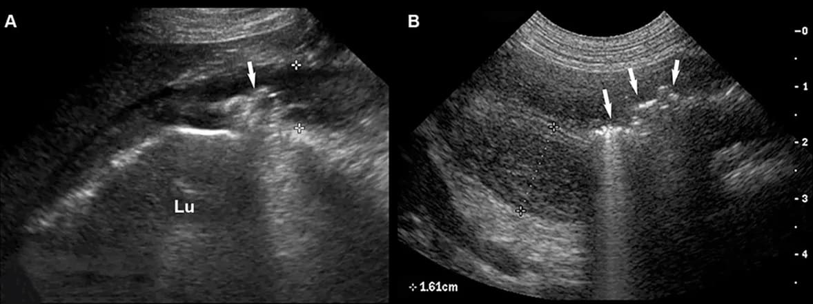
=> Case lâm sàng 1:
V. Chẩn đoán CLVT
* Viêm niêm mạc
– Dày nếp gấp và thành dạ dày – tá tràng: Thành dạ dày vùng hang vị dày khu trú hoặc lan tỏa (> 5 mm khi lòng dạ dày căng tốt, hoặc > 10 mm ở vùng nối thực quản – dạ dày) kèm dày các nếp niêm mạc; ở hành tá tràng thành dày > 3 mm.
– Hình ảnh phân tầng thành đặc trưng (dấu hiệu bia bắn hoặc đường ray): Phản ánh tình trạng viêm cấp tính của thành ống tiêu hóa sau tiêm thuốc cản quang tĩnh mạch:
+ Lớp niêm mạc trong cùng mỏng, ranh giới rõ và tăng ngấm thuốc mạnh trên thì động mạch muộn và tĩnh mạch cửa do xung huyết, tăng tưới máu tại chỗ.
+ Lớp dưới niêm mạc ở giữa dày lên và giảm tỷ trọng rõ rệt (tỷ trọng dịch khoảng 10–30 HU) do tích tụ dịch phù nề viêm.
+ Lớp cơ và thanh mạc ngoài cùng ngấm thuốc bình thường hoặc tăng nhẹ, tạo thành cấu trúc ba lớp đồng tâm điển hình.
– Phản ứng viêm quanh thành ống tiêu hóa: Vùng mỡ mạc nối hoặc dây chằng gan – tá tràng lân cận có thể tăng tỷ trọng nhẹ dạng dải mờ do thâm nhiễm viêm khu trú, đôi khi kèm hạch phản ứng nhỏ vùng quanh dạ dày hoặc rốn gan.
– Cạm bẫy: Dạ dày xẹp do không uống đủ nước hoặc khí làm căng lòng trước khi chụp tạo hình giả dày thành và giả dày nếp niêm mạc rất dễ nhầm với viêm niêm mạc hoặc u thâm nhiễm; cần phân biệt dày thành do viêm lành tính (bảo tồn cấu trúc phân tầng ba lớp, bề mặt niêm mạc trơn láng, thâm nhiễm mỡ nhẹ) với ung thư dạ dày xâm lấn (dày thành không đối xứng, mất cấu trúc phân tầng, bờ nham nhở và thâm nhiễm mỡ hoặc hạch ác tính quanh dạ dày).
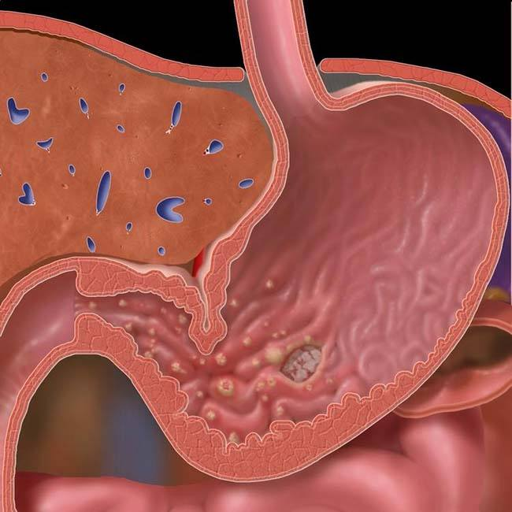
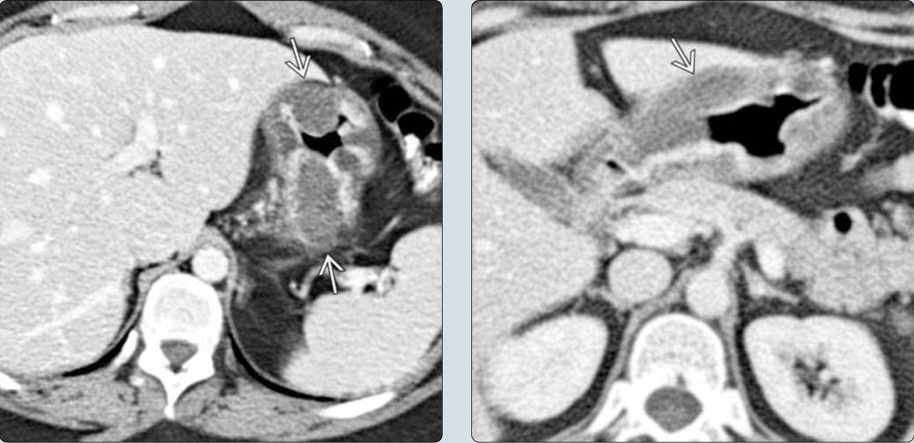
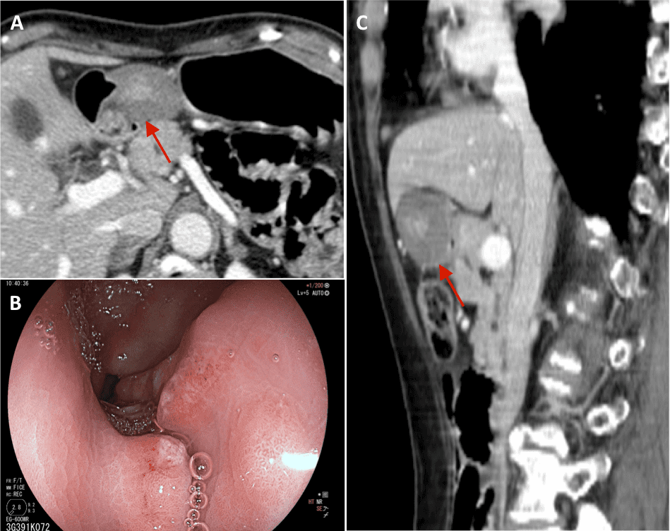
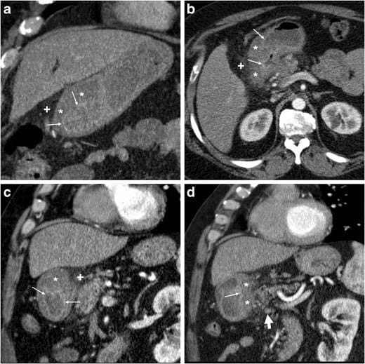
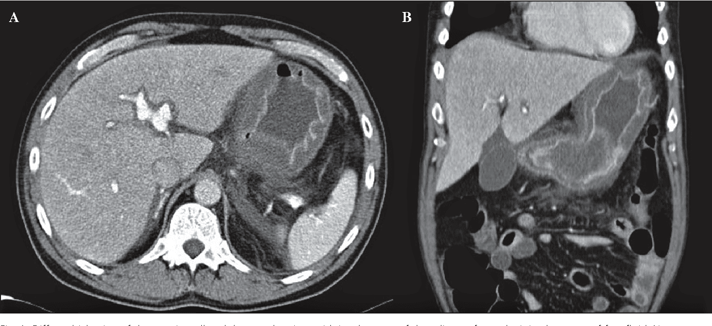
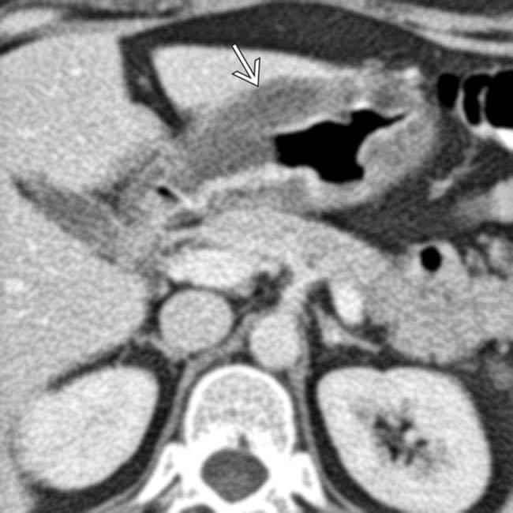
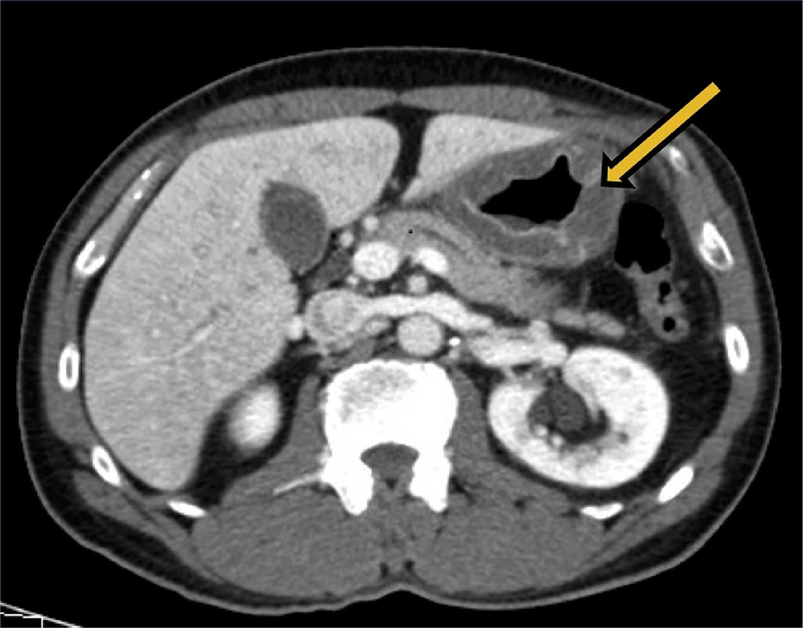
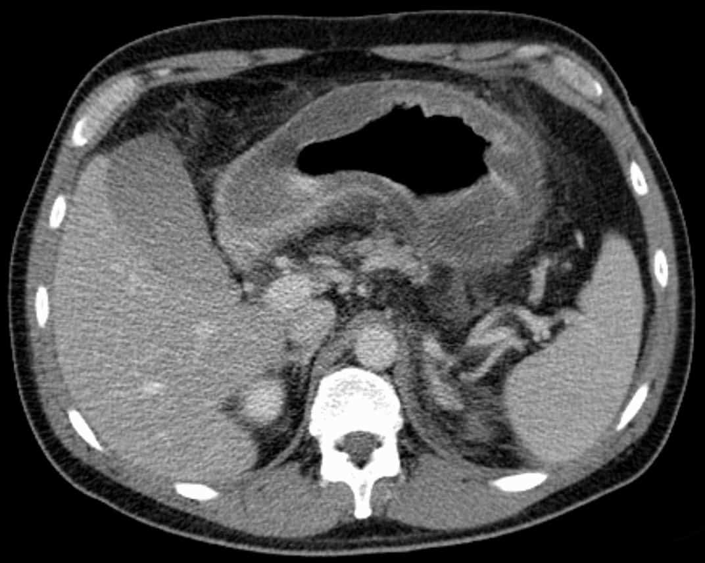
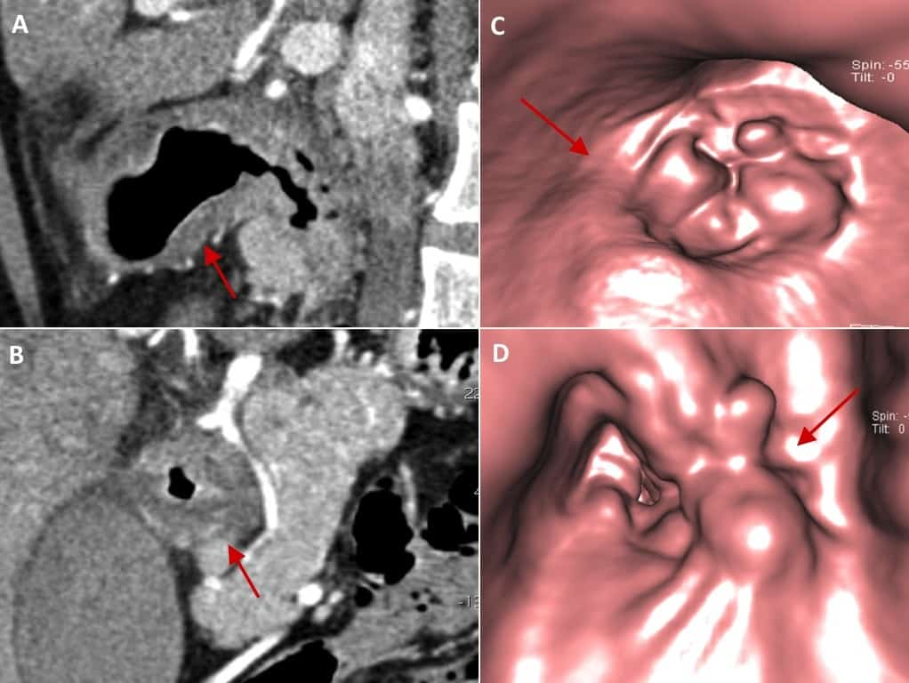
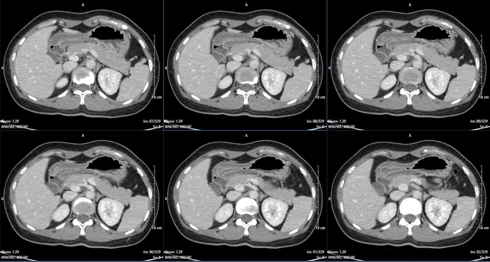
=> Case lâm sàng 1:
=> Case lâm sàng 2:
=> Case lâm sàng 3:
* Loét dạ dày
– Kỹ thuật thăm khám: Đánh giá ổ loét trên cắt lớp vi tính tối ưu khi bệnh nhân nhịn ăn, uống 500–800 mL nước làm căng lòng dạ dày – tá tràng (thuốc cản quang đường uống tỷ trọng âm) kết hợp tiêm thuốc cản quang tĩnh mạch chụp thì động mạch muộn và tĩnh mạch cửa, tái tạo đa mặt phẳng (MPR) theo trục dọc thành ống tiêu hóa.
– Dấu hiệu trực tiếp của ổ loét: Tổn thương khuyết niêm mạc khu trú vượt qua lớp cơ niêm tạo hốc chứa dịch hoặc bóng khí nhỏ ăn sâu vào thành dạ dày – tá tràng:
+ Hình thái hốc loét dạng đường hầm hẹp sâu hoặc khuyết lõm chân rộng (dạng chén hay miệng núi lửa), làm gián đoạn đường ngấm thuốc liên tục của lớp niêm mạc bình thường tại đáy ổ loét.
+ Ổ loét nông kích thước < 5 mm thường khó phát hiện trên cắt lớp vi tính thường quy ngay cả khi đã làm căng lòng dạ dày, chủ yếu chỉ nhận diện qua các dấu hiệu gián tiếp của thành ống tiêu hóa xung quanh.
– Dấu hiệu gián tiếp tại thành và mô xung quanh: Thành dạ dày hoặc hành tá tràng quanh ổ loét dày khu trú nhưng vẫn bảo tồn cấu trúc phân tầng đặc trưng:
+ Lớp niêm mạc bề mặt quanh miệng ổ loét tăng ngấm thuốc rõ do xung huyết viêm, tạo hình viền tăng tỷ trọng bao quanh khuyết loét.
+ Lớp dưới niêm mạc dày lên và giảm tỷ trọng do phù nề viêm cấp tính (tạo vòng phù nề bao quanh ổ loét), kèm thâm nhiễm mỡ dạng dải mờ ở mạc nối hoặc dây chằng gan – tá tràng lân cận.
– Phân biệt loét lành tính và ung thư dạ dày thể loét trên cắt lớp vi tính: Dựa trên mức độ đối xứng, cấu trúc phân tầng thành và tình trạng thâm nhiễm ngoài thanh mạc:
+ Loét lành tính gây dày thành đối xứng, bảo tồn cấu trúc phân tầng ba lớp sau tiêm, bờ miệng ổ loét trơn nhẵn và thâm nhiễm mỡ quanh thành khu trú nhẹ.
+ Ung thư dạ dày thể loét biểu hiện bằng khối dày thành không đối xứng hoặc dạng chồi sùi tạo gờ u lồi vào lòng dạ dày, mất hoàn toàn cấu trúc phân tầng thành, đáy ổ loét nằm trong khối u thay vì ăn lõm ra ngoài, kèm xâm lấn mỡ quanh dạ dày hoặc hạch vùng to bất thường.
– Cạm bẫy: Nếp niêm mạc dạ dày bình thường khi lòng dạ dày chưa căng đủ nước có thể tạo khe hẹp chứa khí hoặc dịch giả hình hốc loét sâu; ngoài ra, loét tá tràng ở mặt trước hoặc mặt sau hành tá tràng dễ bị bỏ sót trên lát cắt ngang nếu không đối chiếu đồng thời trên mặt phẳng đứng ngang (coronal) và đứng dọc (sagittal).
=> Case lâm sàng 1:
– Xuất huyết tiêu hóa hoạt động do loét: Cắt lớp vi tính mạch máu đa thì (không tiêm, thì động mạch và thì tĩnh mạch cửa) có vai trò then chốt giúp định vị điểm chảy máu và định hướng nút mạch can thiệp cấp cứu:
+ Trên thì không tiêm thuốc cản quang, máu cục mới đông trong lòng dạ dày hoặc hành tá tràng (dấu hiệu cục máu đông canh gác – sentinel clot) biểu hiện bằng khối tăng tỷ trọng tự nhiên (khoảng 45–70 HU), giúp khoanh vùng vị trí ổ loét chảy máu.
+ Trên thì động mạch và thì tĩnh mạch cửa, dấu hiệu chảy máu hoạt động là ổ thoát thuốc cản quang (contrast extravasation) tỷ trọng cao (> 90 HU hoặc tương đương tỷ trọng động mạch lân cận) thoát ra từ đáy ổ loét vào lòng ống tiêu hóa, thay đổi hình dạng và lan rộng dần trên thì muộn.
+ Giả phình mạch ở đáy ổ loét (thường gặp tại nhánh động mạch vị trái trong loét dạ dày hoặc động mạch vị tá tràng trong loét mặt sau hành tá tràng) biểu hiện bằng ổ ngấm thuốc hình tròn hoặc bầu dục ranh giới rõ ở thì động mạch nhưng rửa thuốc đồng tỷ trọng với lòng mạch ở thì tĩnh mạch cửa mà không lan rộng ra lòng ruột.
+ Cạm bẫy: Chống chỉ định dùng thuốc cản quang đường uống tỷ trọng dương (baryte hoặc thuốc cản quang iod pha loãng) khi nghi ngờ xuất huyết tiêu hóa cấp vì thuốc cản quang trong lòng ống tiêu hóa sẽ che lấp hoàn toàn ổ thoát thuốc từ thành mạch; đồng thời cần phân biệt thoát thuốc hoạt động với viên thuốc uống chưa tan, mảnh thức ăn tăng tỷ trọng hoặc kẹp cầm máu kim loại bằng cách đối chiếu chặt chẽ với thì không tiêm.
=> Case lâm sàng 1:
=> Case lâm sàng 2:
=> Case lâm sàng 3:
* Biến chứng
– Thủng ổ loét vào ổ phúc mạc tự do: Biến chứng cấp cứu ngoại khoa phổ biến nhất, thường gặp ở ổ loét mặt trước hành tá tràng hoặc bờ cong nhỏ dạ dày:
+ Dấu hiệu trực tiếp giúp định vị lỗ thủng là khuyết mất liên tục toàn bộ bề dày thành dạ dày – tá tràng (cắt cụt cả niêm mạc, lớp dưới niêm mạc và thanh mạc) kèm dày thành phù nề và thâm nhiễm mỡ khu trú xung quanh.
+ Khí tự do ổ phúc mạc tập trung chủ yếu ở tầng trên mạc treo đại tràng ngang như mặt trước gan, quanh dây chằng liềm, khe dây chằng tròn, hậu cung mạc nối hoặc các bóng khí nhỏ nằm kẹt ngay sát vị trí thủng (dấu hiệu bóng khí cạnh lỗ thủng).
+ Dịch tự do ổ bụng tỷ trọng dịch hoặc dịch giàu protein (20–40 HU) tích tụ ở quanh gan, rãnh cạnh đại tràng phải, khoang Morison và túi cùng Douglas; nếu cho uống thuốc cản quang tan trong nước có thể thấy thuốc thoát trực tiếp qua lỗ thủng vào khoang phúc mạc.
– Loét xuyên thấu (thủng bít vào tạng lân cận): Ổ loét mặt sau hành tá tràng hoặc bờ cong nhỏ ăn xuyên qua thành ống tiêu hóa nhưng được bao bọc bởi tạng lân cận mà không gây tràn khí tự do ổ phúc mạc:
+ Loét mặt sau hành tá tràng thường xuyên thấu vào đầu tụy gây viêm tụy cấp khu trú, xóa mờ ranh giới giữa thành tá tràng và nhu mô tụy kèm ổ dịch hoặc bóng khí nhỏ kẹt tại vùng tiếp giáp.
+ Loét bờ cong nhỏ có thể xuyên thấu vào thùy gan trái, mạc nối nhỏ hoặc túi mật, đôi khi tạo đường rò mật – tiêu hóa (khí trong đường mật kèm mất ranh giới tá tràng – túi mật).
– Hẹp môn vị – hành tá tràng: Phản ứng phù nề viêm cấp tính hoặc xơ hóa co kéo mạn tính làm hẹp khít ống môn vị hoặc hành tá tràng, biểu hiện trên cắt lớp vi tính bằng dạ dày giãn căng ứ đọng nhiều dịch và thức ăn (mức dịch – cặn thức ăn) kèm đoạn chuyển tiếp dày thành khu trú tại vùng tiền môn vị – hành tá tràng.
– Cạm bẫy: Thủng mặt sau hành tá tràng (đoạn D1 thấp hoặc D2) có thể chỉ gây tràn khí và tụ dịch khoang sau phúc mạc (khoang cạnh thận trước phải, quanh tĩnh mạch chủ dưới) mà hoàn toàn không có khí tự do trong ổ phúc mạc; đồng thời cần phân biệt thủng do loét lành tính với thủng trên nền ung thư dạ dày thể loét (thành dày không đối xứng mất cấu trúc phân tầng, bờ nham nhở và hạch vùng hoặc di căn phúc mạc đi kèm).
=> Case lâm sàng 1:


=> Case lâm sàng 2:


=> Case lâm sàng 3:


=> Case lâm sàng 4:


=> Case lâm sàng 5:


=> Case lâm sàng 6:

=> Case lâm sàng 7:


=> Case lâm sàng 8:


=> Case lâm sàng 9:


=> Case lâm sàng 10: thủng hành tá tràng


=> Case lâm sàng 11: thủng hành tá tràng


VI. Tiên lượng & Điều trị
* Tiên lượng
– Diễn tiến tự nhiên của loét dạ dày – tá tràng phụ thuộc chủ yếu vào việc loại bỏ căn nguyên (tiệt trừ *Helicobacter pylori*, ngừng NSAIDs) và kiểm soát yếu tố nguy cơ, trong khi các dấu hiệu hình ảnh quyết định phân tầng nguy cơ cấp cứu:
+ Tỷ lệ liền sẹo sau điều trị chuẩn đạt trên 85–90% sau 4–8 tuần, nhưng tỷ lệ tái phát có thể vượt 50–60% trong vòng một năm nếu không tiệt trừ *Helicobacter pylori* hoặc tiếp tục dùng NSAIDs.
+ Các biến chứng nặng gồm xuất huyết tiêu hóa (thường gặp nhất), thủng tạng rỗng (tỷ lệ tử vong cao nhất, đặc biệt ở người cao tuổi hoặc chẩn đoán muộn > 24 giờ), loét xuyên thấu và hẹp môn vị.
+ Yếu tố tiên lượng nặng trên hình ảnh gồm ổ loét kích thước khổng lồ (> 2 cm ở hành tá tràng hoặc > 3 cm ở dạ dày), vị trí mặt sau hành tá tràng (nguy cơ ăn mòn động mạch vị tá tràng), dấu hiệu thoát thuốc cản quang hoạt động hoặc giả phình mạch trên cắt lớp vi tính, và dấu hiệu mất liên tục xuyên thành kèm tràn khí – dịch tự do ổ bụng.
* Nguyên tắc điều trị
– Chiến lược xử trí theo khuyến cáo thực hành của Hiệp hội Tiêu hóa Hoa Kỳ (ACG Clinical Guideline 2024) và Hội Phẫu thuật Cấp cứu Thế giới (WSES Guidelines 2020) kết hợp điều trị nội khoa nền tảng, cầm máu qua nội soi, can thiệp nội mạch và phẫu thuật cấp cứu khi có biến chứng:
+ Điều trị nội khoa nền tảng gồm thuốc ức chế bơm proton (PPI) để liền sẹo niêm mạc, phác đồ kháng sinh tiệt trừ *Helicobacter pylori* khi dương tính và ngừng hoặc thay thế NSAIDs – aspirin kết hợp dự phòng PPI ở nhóm nguy cơ cao.
+ Xuất huyết tiêu hóa do loét ưu tiên hồi sức huyết động và nội soi cầm máu trong vòng 24 giờ; khi nội soi thất bại hoặc tái chảy máu nặng, chụp mạch số hóa xóa nền (DSA) nút mạch chọn lọc (đặc biệt động mạch vị tá tràng hoặc động mạch vị trái) là lựa chọn ưu tiên trước phẫu thuật.
+ Thủng ổ loét vào ổ phúc mạc tự do có chỉ định phẫu thuật khâu lỗ thủng (nội soi ổ bụng hoặc mổ mở) kèm đắp mạc nối lớn; điều trị bảo tồn không phẫu thuật chỉ cân nhắc chọn lọc nghiêm ngặt ở bệnh nhân ổn định huyết động, không viêm phúc mạc lan tỏa và chụp cắt lớp vi tính có uống thuốc cản quang tan trong nước xác nhận lỗ thủng đã tự bít kín hoàn toàn.
+ Hẹp môn vị lành tính ưu tiên điều trị nội khoa giảm phù nề kết hợp nong bóng qua nội soi; phẫu thuật tạo hình môn vị hoặc nối vị – tràng chỉ đặt ra khi sẹo xơ hẹp khít kháng trị.
* Vai trò CĐHA
– Chẩn đoán hình ảnh giữ vai trò trọng yếu từ đánh giá trước can thiệp, định hướng nút mạch cầm máu, phát hiện biến chứng hậu phẫu đến theo dõi liền sẹo và loại trừ ác tính:
+ Trước can thiệp và phẫu thuật, cắt lớp vi tính đa dãy giúp xác định chính xác vị trí lỗ thủng (tầng trên hay dưới mạc treo đại tràng ngang, trong phúc mạc hay sau phúc mạc) để chọn đường mổ, đồng thời lập bản đồ giải phẫu mạch máu và định vị ổ thoát thuốc cản quang giúp rút ngắn thời gian tiếp cận khi nút mạch cấp cứu.
+ Trong điều trị bảo tồn thủng bít hoặc theo dõi sau khâu lỗ thủng, chụp lưu thông đường tiêu hóa trên hoặc cắt lớp vi tính với thuốc cản quang tan trong nước đánh giá tình trạng rò rỉ thuốc qua thành ống tiêu hóa trước khi cho bệnh nhân ăn lại đường miệng.
+ Theo dõi sau điều trị nội khoa bắt buộc thực hiện nội soi kiểm tra sau 8–12 tuần kèm sinh thiết lại đối với mọi ổ loét dạ dày để khẳng định liền sẹo hoàn toàn và loại trừ ung thư dạ dày thể loét; X-quang đối quang kép chỉ dùng thay thế khi bệnh nhân chống chỉ định nội soi.
Tài liệu tham khảo
* Differentiation between Malignant and Benign Gastric Ulcers: CT Virtual Gastroscopy versus Optical Gastroendoscopy – Chiao-Yun Chen, MD, Yu-Ting Kuo, MD, PhD, Chien-Hung Lee, PhD
* Perforated Pyloroduodenal Peptic Ulcer and Sonography – Siarhei Kuzmich, Chris J. Harvey
* Concomitant gastric and duodenal ulcers – Eric M. Bateson, M.D., F.F.R.
* Duodenal pathology on routine MDCT scan of the abdomen: What can we really diagnose? – S. C. Cheong, R. Taneja; Singapore/SG
* Complicated peptic ulcer disease – Emergency radiology assessment – W. Schmitt
* Double-Contrast Upper Gastrointestinal Radiography: A Pattern Approach for Diseases of the Stomach – Stephen E. Rubesin,MDMarc S. Levine,MDIgor Laufer,MD
* Non-perforated peptic ulcer disease: multidetector CT findings, complications, and differential diagnosis – Giao Tonolini
* CT of Gastric Emergencies – Preethi Guniganti, Courtney H. Bradenham, Constantine Raptis, Christine O. Menias, Vincent M. Mellnick
* Gastroduodenal emergencies. Role of CT and spectrum of diseases – C. Fernández Cabrera
* MDCT imaging of the stomach: advances and applications – Prashant Nagpal, Anjali Prakash, Gaurav Pradhan, Aditi Vidholia, Nishant Nagpal, Sachin S Saboo, David M Kuehnand Ashish Khandelwal
* Radiology Illustrated Gastrointestinal Tract – Byung Ihn Choi